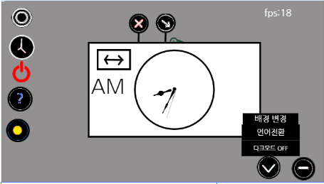

Entry OS는 편리함과 접근성을 추구하는 새로운 OS입니다. Entry OS는 기존에 사용하던 OS와는
차별화되는 특성을 가지고 있으며, 다양한 기능이 준비되어 있습니다.
Entry OS는 현재 알파 테스트 단계에 있으며 아직 추가될 것은 무궁무진 합니다. 기존의 OS와는 다른 편리성과 색다른 기능과 함께 개발되고 있습니다.
이 OS는 업무용으로 최적화되어 있지만 일반 사용자들을 위해서도 개발될 예정입니다. 또한 현재는 PC에서만 가능하지만, 곧 모바일 운영체제 버전 개발이 시작될 예정입니다.
현재 다양한 앱이 준비되어 있으며, 편리함을 위해 다양한 기능이 준비되어 있고, UI&UX역시 유저들을 위해 최적화되어 있습니다.
기능
Entry OS의 기능 소개
시계
Entry OS의 시계 앱은 디지털, 아날로그 시계를 모두 지원하며, 끊김 없는 정확한 시간을 표시합니다.
AI 매니저
AI 매니저는 Entry OS만의 특별한 앱이며 언제 어디서나 편리한 일처리를 도와줍니다. 모든 앱이 닫혀있다면 간단히 f키로 부를 수도 있으며 앱 닫기, 설정 변경등 다양한 설정이 음성 명령 하나만으로 모두 가능합니다.
AI 매니저 명령어 목록
컴퓨터 종료
컴퓨터를 종료합니다.
다크모드 켜줘, 다크모드 꺼줘
다크모드를 켜거나 끕니다.
(앱 이름) 켜줘, 꺼줘
특정앱을 켜거나 끕니다.
AI 매니저는 수많은 기능이 더 추가될 예정입니다.
날씨
Entry OS 날씨 앱은 대한민국 전국의 날씨를 알려주며 그외에도 체감온도, 풍속등의 추가 날씨 정보도 모두 실시간으로 제공하고 있습니다.
설정
Entry OS 설정 앱을 사용해 다양한 설정을 조정하고 여러분만의 Entry OS를 만들어보세요. 여러분의 취향의 맞게 여러분의 작업이 더 편리해질 것입니다.
설정 앱 기능 목록
배경 전환
85개의 배경중 원하는 배경을 고를 수 있습니다.
언어 전환
언어를 한국어나 영어로 전환합니다.
다크모드 ON/OFF
다크모드를 비활성화/활성화 시킵니다.
더 많은 설정 기능이 추가될 예정입니다.
최소화된 앱
Entry OS 고유의 최소화된 앱은 최소화된 모든 앱을 보여주고 최소화를 해제할 수 있는 도구입니다. [또한 최소화된 앱은 이곳에서 바로 닫을 수 있습니다.추가 예정]
Entry OS만의 특별한 기능
Entry OS만이 가지고 있는 특별한 기능을 소개합니다.
새로운 UI
Entry OS는 접근성과 편리성을 위한 기존 OS와는 다른 완전히 새로운 UI 체계를 기반으로 개발되었습니다. 많은 앱은 편리하게 실행 가능하고 창 닫기, 최소화 창은 숨겨져 있어 여러분의 업무를 방해하지 않습니다. 또한 간단히 화면 밑에서 설정이나 앱등을 손쉽게 관리할 수 있는 완벽한 레이아웃으로 개발되었습니다.
다크 모드

Entry OS는 설정에서 다크모드를 활성화할수 있습니다. 다크모드를 사용할 경우 여러분의 눈 건강을 해치지 않으며, 사용자에게 편안함을 주고, 더 깔끔한 디자인으로 탈바꿈한 Entry OS를 체험할 수 있습니다. 지금 바로 설정에서 다크모드를 활성화해보세요.
사용해 보기
무료로 제공되는 Entry OS를 지금 바로 체험하세요
엔트리에 회원가입 뒤 아래 사이트로 온라인에서 안정적인 Entry OS의 서비스를 체험하세요.